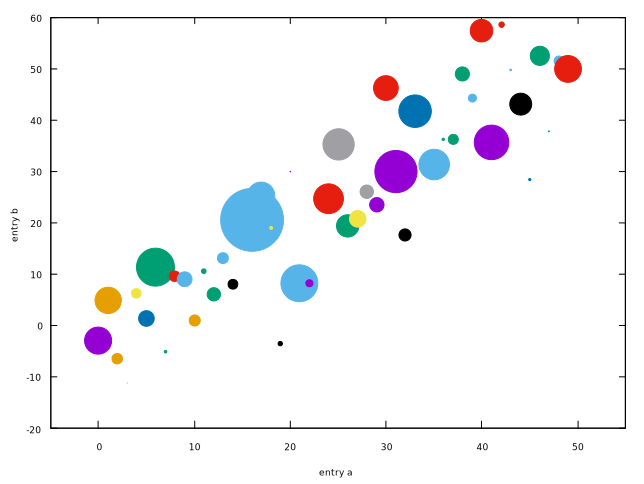

More Tutorials
Matplotlib provides both the pyplot API and the object-oriented API, but gnuplot only offers command style, which is more like the pyplot API of Matplotlib. So, generally, this article has no much difference with Basic Usage, and I only show some script to plot these figures shown in Pyplot tutorial.
Readers can skip most content of this section and jump to Save plot directly if they have already understood Basic Usage because most of the usages and concepts are repeated.
The script in this section can be found
script/tutorials.
Intro to plot
plot is the most important command in gnuplot.
$y << EOD
1
2
3
4
EOD
set ylabel 'some numbers'
plot $y with lines
You may be wondering why the x-axis ranges from 0-3 and the y-axis from 1-4. If you only provide one column for plot, gnuplot assumes it is a sequence of y values, automatically generates the x values (starting from 0) for you.
To plot x versus y, you can write:
$data << EOD
1 1
2 4
3 9
4 16
EOD
plot $data u 1:2 w l
Note that we are using the abbreviations:
u: usingw: withl: lines
Formatting the style of your plot
It is very flexible to set the color and line type of the plot.
$data << EOD
1 1
2 4
3 9
4 16
EOD
unset key
set xrange [0:6]
set yrange [0:20]
set xtics 0,1,6
set ytics 0,2.5,20
set format y "%.1f"
plot $data u 1:2 w p pt 7 lc 'red' ps 2
Here we specify the lt (linetype), pt (pointtype), lc (linecolor) and ps (pointsize). And we also set the ranges and tics for X and Y.
The example below illustrates plotting several lines with different format styles:
unset key
set xrange [0:5]
set samples 25
set yrange [-1:120]
set ytics 0,25
plot x w l dt 2 lw 3 lc 'red', \
x**2 w p pt 5 ps 1.5 lc 'blue', \
x**3 w p pt 9 ps 2 lc '#008000'
Plotting with keyword strings
Gnuplot does not support such feature, but readers can refer to Types of inputs to plotting functions to learn how to plot the scatter with varying sizes and colors.
As we can see, we can specify the column using $i for plot, and this feature is like keyword strings in Matplotlib.
Plotting with categorical variables
set terminal qt size 900,300 font ',10'
set multiplot layout 1,3 title 'Categorical Plotting' font ',14'
unset key
set xrange [-1:3]
set yrange [0:110]
set xtics ('group\\\_a' 0, 'group\\\_b' 1, 'group\\\_c' 2)
set tics nomirror out
$y << EOD
1
10
100
EOD
set style fill solid
set boxwidth 0.8
plot $y with boxes
plot $y with points pt 7 ps 2
plot $y with lines lw 2
unset multiplot
Note that the qt terminal is in enhanced text mode, so we need to add extra \\\ to display the underscore. Another solution is to set noenhanced.
Controlling line properties
Lines have many attributes that you can set: linewidth, dash style, antialiased, etc:
set linetype 1 lc rgb "dark-violet" lw 2
Working with multiple figures and axes
set multiplot layout 2,1
unset key
set linetype 1 lc "black" lw 2
set linetype 2 lc rgb '#E41A1C' dt 2 lw 2 # red
f(x) = exp(-x) * cos(2*pi*x)
plot 't1.dat' using 1:(f($1)) with points pt 7 ps 1.5 lc 'blue', f(x) with lines ls 1
g(x) = cos(2*pi*x)
plot [0:5][] g(x) with lines ls 2
Working with text
set terminal qt font ',16'
set title "Histogra of IQ"
set xlabel 'Smarts'
set ylabel 'Probability'
set label '{/Symbol m} = 100, {/Symbol s} = 15' at 60,600
unset key
set xrange [40:160]
set grid
set style fill solid 0.75
bin(x,s) = s*floor(x/s)
binc(x,s) = s*(floor(x/s)+0.5)
set boxwidth 120/50.
stats 'smart.dat' u 1 noout
plot 'smart.dat' using (binc($1,120/50.)):(1./(120/50.*STATS_records)) smooth frequency with boxes fc '#4DAF4A'
The script (smart.gp) uses a trick to compute the probability, because it would display frequency for given bins.
Horizontal bar
In gnuplot, there is no delicate way to draw a horizontal bar directly, and you have to use boxxyerror to achieve the similar effect, while it can be done easily with the barh function in Matplotlib. In what follows, we are going to plot the figure in The Lifecycle of a Plot. This subsection is adapted from Horizontal bar chart in gnuplot.
set yrange [0:*]
set style fill solid
unset key
myBoxWidth = 0.8
set offsets 0,0,0.5-myBoxWidth/2.,0.5
plot $data using 2:0:(0):2:($0-myBoxWidth/2.):($0+myBoxWidth/2.):($0+1):ytic(1) \
with boxxyerror lc var
The complete script can be found at barh.gp.
Save plot
Gnuplot provides a variety of formats for outputs by setting its terminal1. In practice, we would like to run a script and output the figure in a batch mode.
$ gnuplot foo.gp
PNG
set terminal pngcairo size 1600,1200 enhanced font 'Verdana,16'
set output 'barh_png.png'
The complete script can be found at barh_png.gp. Here we set the terminal to pngcairo, and then specify its size in pixels and its font type and font size. You can check the documentation by typing help set terminal pngcairo. For example, the transparent option would make output figure transparent.
set terminal pngcairo transparent size 1600,1200 enhanced font 'Verdana,16'
EPS
set terminal postscript eps size 10,8 enhanced color font 'Helvetica,18'
set output 'barh_eps.eps'
The complete script can be found at barh_eps.gp. Here we set the terminal to postscript with eps option. Note that the unit of size is inch by default.
set terminal pdfcairo size 10,8 enhanced font 'Verdana,24' rounded
set output 'barh_pdf.pdf'
The complete script can be found at barh_pdf.gp. Here we set the terminal to pdfcairo. Note that the unit of size is inch by default.
The
SVG
set terminal svg size 1600,1200 enhanced font 'Helvetica,18'
set output 'barh_svg.svg'
The complete script can be found at barh_svg.gp. Here we set the terminal to svg.
And we can also output .tex by epslatex terminal. See more at How to write complex mathematical expressions.
1 Reader can refer to Complete list of terminals.